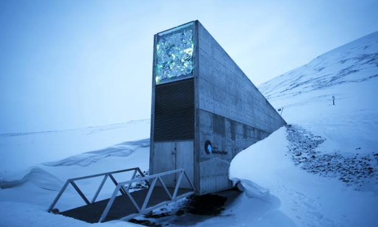

El 'Arca de Noé' de las plantas en peligro
Dia 31 de Mayo, 9:23

La Bóveda de Semillas de Svalbard (Svalbard Global Seed Vault), una especie de Arca de Noé vegetal construido en el Polo Norte para salvaguardar una copia de todas las plantas comestibles del mundo para afrontar un hipotético desastre global, necesita reparaciones. Las autoridades de Noruega están construyendo nuevas defensas para proteger esta instalación, después de que las temperaturas demasiado altas del año pasado provocaran que se derritiera el permafrost en el que está excavada la bóveda y entrara una gran cantidad de agua en el túnel de acceso a esta fortaleza de la humanidad. Las semillas no se han visto afectadas, pero el incidente ha revelado que el cambio climático supone un riesgo para el que también se conoce como "el almacén del juicio final". Y que necesita cuidados adicionales.
La bóveda, un banco de germoplasma universal, fue construida en el interior de una montaña, al final de un túnel de 150 metros que se hunde en la tierra helada de una montaña del Ártico, muy cerca de Longyearbyen, la ciudad más al norte del mundo, capital de las Svalbard, un archipiélago de soberanía noruega.
Al fondo, en el seno de la montaña tres cámaras, mantenidas artificialmente a 18 grados bajo cero, albergan las semillas con la memoria vegetal de la humanidad. En la actualidad guarda 843.400 semillas de 5.128 especies diferentes que provienen de 233 países. Tiene capacidad para preservar 2.500 millones de semillas. Su objetivo es poder repoblar de plantas comestibles zonas arrasadas por un desastre nuclear, por ejemplo.
Fue construido en un lugar tan remoto por tratarse de uno de los territorios con menos actividad sísmica del mundo y porque, en caso de desastre universal, el frío permitiría conservar las semillas incluso sin electricidad. Se suponía que el almacén estaba diseñado "a prueba de fallos" y contra "el desafío de los desastres naturales o provocados por el hombre". Que su propio diseño haría innecesario el cuidado humano. Pero no.
La subida de las temperaturas en el Ártico al final del año pasado, el más caluroso desde que se tienen registros, ha provocado que en lugar de nieve ligera cayeran lluvias intensas y que el permafrost, el suelo congelado en el que fue excavado el arca, se derritiera. "No estaba en nuestros planes que el permafrost se derritiera", ha dicho a The Guardian Hege Hjaa Aschim, portavoz del Gobierno noruego, propietario de la bóveda. Las temperaturas medias en octubre fueron de alrededor de 0 grados, y no de -10 como acostumbran en esas fechas. "Fue como un verano húmero en Noruega", añadió la portavoz a BBC.
El resultado es que una gran cantidad de agua penetró en el túnel de entrada -inundó unos 15 metros de los 100 del pasadizo de acceso- y posteriormente se congeló. Las semillas no sufrieron, pero el incidente ha llevado a Noruega a diseñar nuevas paredes impermeables en el exterior y el interior del túnel, a construir zanjas de drenaje en la montaña, a retirar varias fuentes de calor y a poner en marcha un proyecto de vigilancia del permafrost de Svalbard. "Ya hemos quitado el agua", ha dicho Hege Njaa Aschim.
La brecha ha puesto en tela de juicio la capacidad de supervivencia autónoma de la bóveda. "Se suponía que funcionaría sin la ayuda de los humanos, pero ahora estamos vigilando la bóveda de semillas 24 horas al día", dijo Aschim. "Tenemos que ver qué podemos hacer para minimizar todos los riesgos y asegurarnos de que el banco de semillas pueda cuidarse a sí mismo. Nos estamos tomando esto muy seriamente y estamos haciendo un seguimiento constante".
Existen 1.700 bancos genéticos en todo el mundo, que salvaguardan colecciones de cultivos alimentarios. Muchos de ellos están expuestos a desastres naturales y guerras, según el consorcio Global Crop Diversity, informa France Presse.